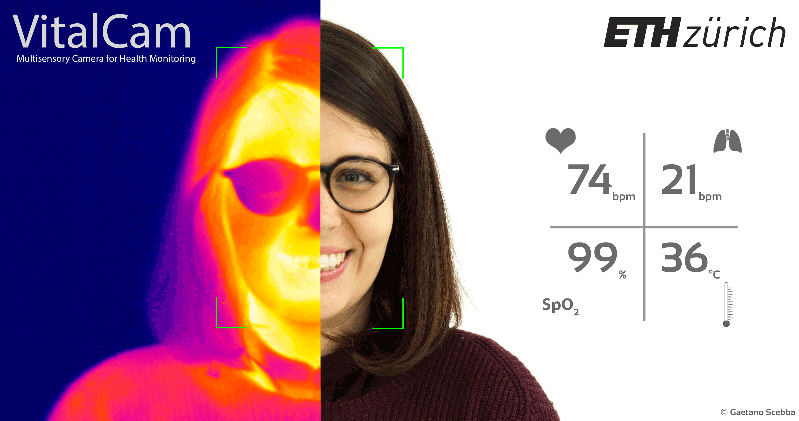

VitalCam
Cables for monitoring pulse rate. Cables for measuring breathing frequency. Cables for detecting the body temperature. Cables for quantifying the oxygen in your blood. Monitoring the health of patients requires a mass of sensors and cables. At ETH Zurich, we developed algorithms to replace all those cables with a camera-based device.
Conventional monitoring of primary vital signs requires obtrusive contact with human body. Contact methodologies are not only prone to artifacts, but are also uncomfortable for long term monitoring both in clinical and home-monitoring scenarios.

In the VitalCam project, we developed a multisensory camera able to measure physiological signals such as heart rate, breathing frequency, blood oxygen saturation, and body temperature. Using visible and thermal cameras in conjunction with computer vision algorithms, the VitalCam watches for the tiny changes of skin color to infer the heart rate and for subtle differences of the breath temperature to determine the respiratory rate.
Supervised projects
- Respiratory Rate Estimation using Multispectral Imaging.
Tobias Meyer (2017) MSc, ETH Zurich - Apnea Detection with Multispectral Cameras.
Roman Moser (2018) MSc, ETH Zurich - Camera-based Respiratory Monitoring.
Cinzia Maschio (2018), Internship, ETH Zurich - Improving Data Quality of Camera-based Respiratory Monitoring.
Sonia Laguna Cillero (2019), Amgen Scholar, ETH Zurich